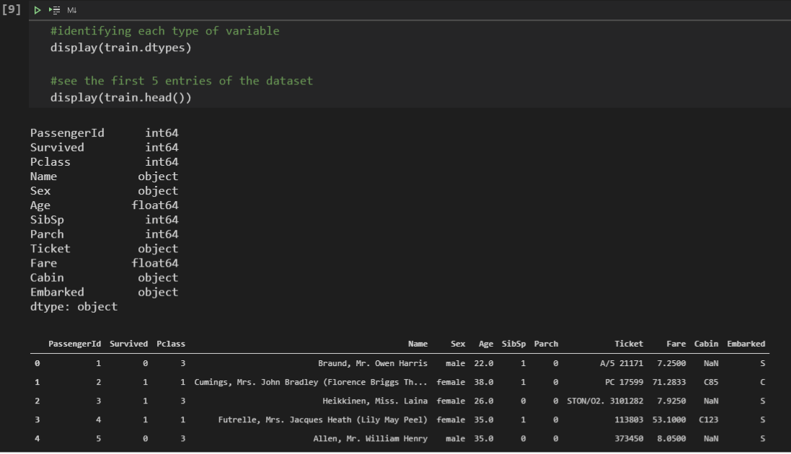

Checklist¶
It is convenient that we follow a framework, a flowchart or at least a checklist with some essential steps for a good analysis, like every Data Science project. For this project, we will follow the steps below:
1. Problem Definition
2. Obtaining the Data
3. Data Exploration
4. Data Preparation
5. Modeling
6. Assessment
We want to break a problem into well-defined steps, making our analysis more robust. Our aim is basically to use available data to measure the probability of survival of passengers on the Titanic.
Problem Definition¶
At this initial stage, we want to analyze and fully understand the problem. For this, we should reflect on the construction of the Titanic, which took about 2 years and cost 7.5 million dollars (values at the time). At 269 meters long, 28 meters wide and 53 meters high, it operated with a crew of 892 people and could carry up to 2435 passengers (spread across the three available classes).
The ship, designed to be the safest and most luxurious of the time, was launched in 1911, gaining a reputation for being “unsinkable”.
The shipwreck had as contributing factors natural causes, such as the climate, and human causes (neglect and overconfidence). Regardless of the causes, the fact is that its shipwreck killed 1502 people out of a total of 2224 passengers.
Although the people who managed to survive were very lucky, some groups of people were more likely to escape death than others. For example, women, children and first class passengers. So, we can see that there is some pattern that can be extracted from the raw data.
Obtaining the Data¶
>> Training Dataset (train.csv)
Used to build the Machine Learning model. In this dataset, it is informed whether the passenger survived or not. It comprises several features, such as passenger gender and boarding class.
>> Test Dataset (test.csv)
It should be used as data never seen by the model. In this dataset, it is not informed whether the passenger survived or not.
Data Exploration¶
The most important step in the project. Here, we will take most of our time. Often, initial questions and hypotheses can only be answered with a well-done exploratory analysis. If it is necessary to build a model, its performance will be directly linked to the quality of this analysis. In this step, we will:
Study each attribute and its characteristics, such as:
Name;
Type (numeric, categorical, float, int, etc);
% of missing values for each column;
Presence of noise or outliers;
Distribution type (Gaussian, uniform, logarithmic).
Identify the target variable
Identify correlations;
View data graphically;
As we are dealing with Supervised Learning, the Survived variable is easily identified as our target variable. Of great importance, let’s build a data dictionary, to know exactly what each column means.
Data dictionary
PassengerId: Passenger identification number
Survived: Informs whether the passenger survived the disaster
0 = No
1 = Yes
Pclass: Ticket Class:
1 = 1st Class
2 = 2nd Class
3 = 3rd Class
Name: Passenger Name
Sex: Gender of the passenger
Age: Age of passenger
SibSp: Number of spouses and siblings on board
Parch: Number of parents and children on board
Ticket: Ticket number
Fare: Ticket Price
Cabin: Passenger cabin number
Embarked: Port at which the passenger boarded:
C = Cherbourg
Q = Queenstown
S = Southampton
Once this is done, we can ask some questions to formulate hypotheses:
What types of each variable?
We already know what each column represents, so let’s take a look at the first entries and see which variables are numeric and which are categorical.
What percentage of missing values?
Cabin information has the most missing information, with more than 77%. Afterwards, the Age column has no value in almost 20% of passengers. Finally, the column informing the Port of Embarkation (Embarked) has only 2% of missing information.
{kind=link}
Data Preparation¶
We will work on categorical variables, cleaning up data and handling missing information, and start preparing our predictive model, where we will first test Logistic Regression techniques.
From now on, we will start to build a feature engineering segmentation, that is, we will process the data to make it ready for our Machine Learning models: Logistic Regression and Decision Tree.
We import the data into DataFrame structures, formulate hypotheses, initiate an exploratory data analysis and visualize graphs and correlations between those variables that we deem relevant.